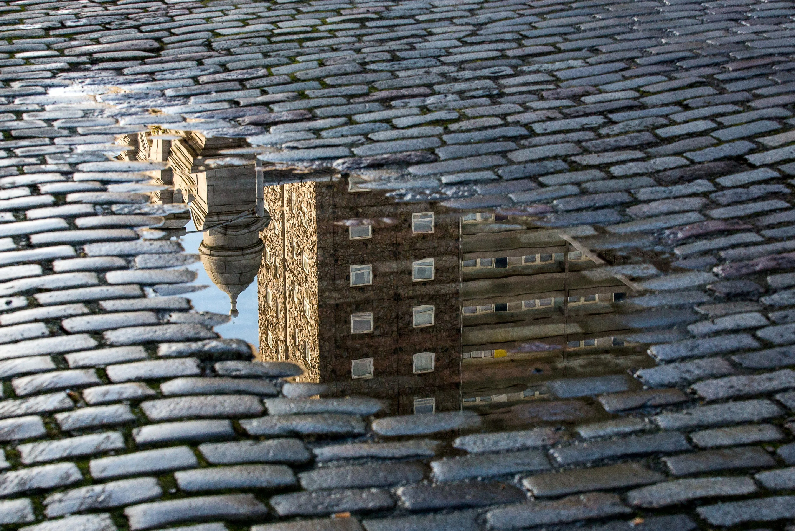
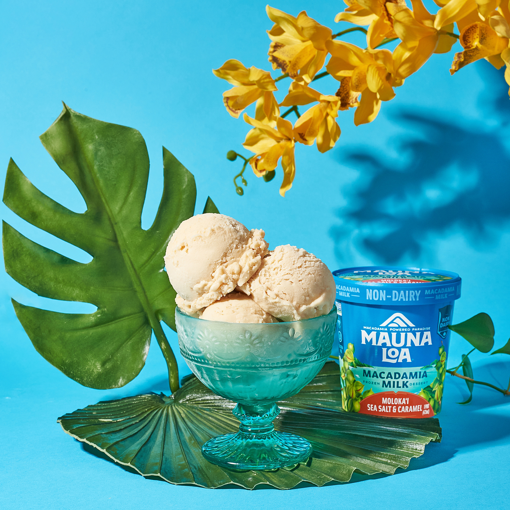
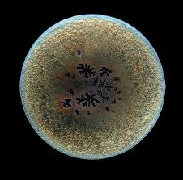
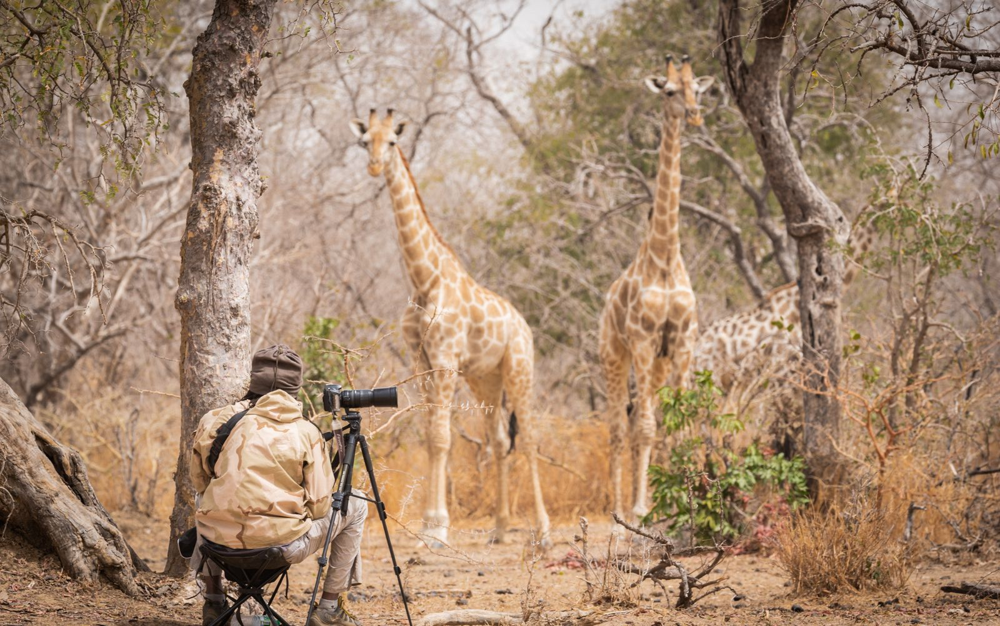

Amaterski fotografi prave fotografije kao hobi, a ne za poslovne ili komercijalne svrhe.

Komercijalna fotografija je uglavnom oblast gde fotografije nisu gledane kao umetnost, nego kao proizvod.
Tu spada:

Od početka kamera se koristila da se zabeleže naučna odkrića.
Na primer, da se fotografišu astronomski događaji.

Ova oblast se bavi dokumentacijom različitih divljih životinja u njihovom prirodnom staništu.